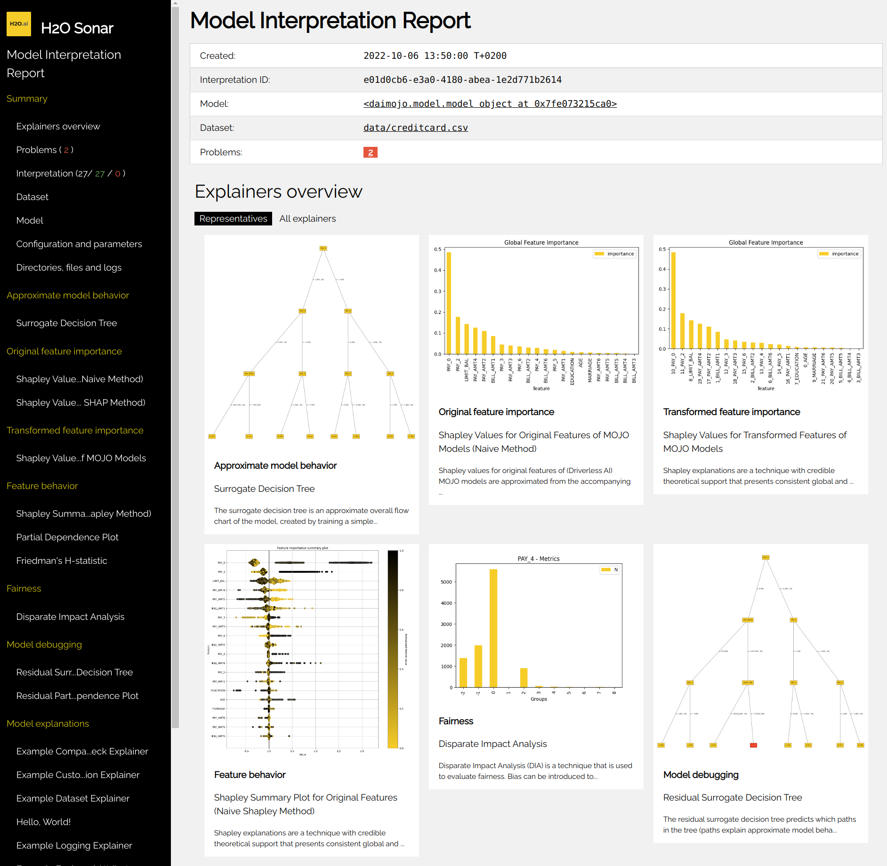
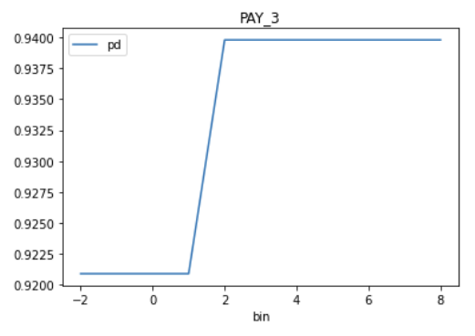

Getting Started with H2O Eval Studio
Getting Started with Predictive Models Interpretation
H2O Eval Studio library explains models by running a set of explainers within an interpretation.
Explainer creates an explanation of the model, such as the most important features or decision tree describing the approximate model behavior. Explanations created by explainers are stored in various formats (like JSon, CSV or as images) in the interpretation results directory along with logs, interpretation (HTML and JSon) overview and other artifacts.
H2O Eval Studio can explain models using:
Running the Interpretation from the Command Line
Check H2O Eval Studio CLI help:
h2o-sonar --help
List available explainers:
h2o-sonar list explainers
Explain your model by running an interpretation:
h2o-sonar run interpretation \
--dataset=dataset.csv \
--model=model.mojo \
--target-col=SATISFACTION \
--results-location=./interpretation-results
Open ./interpretation-results directory and check model explanations. The best location where
to start is the interpretation HTML report which can be found in
h2o-sonar/mli_experiment_<UUID>/interpretation.html:

Running the Interpretation from the Python
Explain your model by running an interpretation:
# dataset
import pandas
dataset = pandas.read_csv(dataset_path)
(X, y) = dataset.drop(target_column, axis=1), dataset[target_column]
# model
from sklearn import ensemble
model = ensemble.GradientBoostingClassifier(learning_rate=0.1)
model.fit(X, y)
# interpretation
from h2o_sonar import interpret
interpretation = interpret.run_interpretation(
dataset=dataset_path,
model=model,
used_features=list(X.columns),
target_col=target_column,
results_location=results_path,
)
# result
print(interpretation) # or interpretation.to_html()
# get the explanation created by the first explainer of the interpretation
explanation = interpretation.get_explainer_result(
interpretation.get_finished_explainer_ids()[0]
)
# show explanation summary
print(explanation.summary())
# show explanation data
print(explanation.data(feature_name="EDUCATION", category="disparity"))
# get explanation plot
print(explanation.plot(feature_name="EDUCATION"))
# show explainer log
print(explanation.log(path=results_path))
# store all explanation artifacts as ZIP archive
explanation.zip(path=archive_path)
Running the Interpretation from the Jupyter Notebook
Explain your model from a Jupyter Notebook:
import pandas
from sklearn.ensemble import GradientBoostingClassifier
from h2o_sonar import interpret
from h2o_sonar.lib.api.models import ExplainableModel
from h2o_sonar.lib.api.datasets import ExplainableDataset
Specify path to the dataset, X and y:
dataset_path = ./datasets/creditcard.csv"
df = pandas.read_csv(dataset_path)
target_col = "default payment next month"
X, y = df.drop(target_col,axis=1), df[target_col]
Specify the model to be explained (or train one):
gradient_booster = GradientBoostingClassifier(learning_rate=0.1)
gradient_booster.fit(X, y)
Specify where to store the interpretation results - explanations created by explainers:
results_location = "./results"
Explain your model by running an interpretation:
interpretation = interpret.run_interpretation(
dataset=dataset_path,
model=gradient_booster,
target_col=target_col,
results_location=results_location,
used_features=list(X.columns),
)
Check for successful explainers:
interpretation.get_successful_explainer_ids()
Retrieve result of the PD/ICE explainer:
result = interpretation.get_explainer_result(PdIceExplainer.explainer_id())
Get explanation data of the feature EDUCATION:
result.data(feature_name="EDUCATION")
Plot partial dependence plot explanation data of the feature PAY_3:
result.plot(feature_name="PAY_3")

Open ./interpretation-results directory and check model explanations.
See also:
H2O Eval Studio Jupyter Notebook examples
Getting Started with Generative Models Evaluation
H2O Eval Studio library evaluates models by running a set of evaluators within an evaluation.
Evaluator creates a evaluation of the LLM models. Evaluations created by evaluators are stored in various formats (like JSon, CSV or data frames) in the evaluation results directory along with logs, evaluation (HTML and JSon) overview and other artifacts.
Running the Evaluation from the Python
Evaluate your model by running an evaluation:
# LLM models to be evaluated
model_host = h2o_sonar_config.ConnectionConfig(
connection_type=h2o_sonar_config.ConnectionConfigType.H2O_GPT_E.name,
name="H2O GPT Enterprise",
description="H2O GPT Enterprise model host.",
server_url="https://h2ogpte.h2o.ai/",
token="sk-6FC...fX3g",
token_use_type=h2o_sonar_config.TokenUseType.API_KEY.name,
)
llm_models = genai.H2oGpteRagClient(model_host).list_llm_model_names()
# evaluation dataset
# test suite: RAG corpus, prompts, expected answers
rag_test_suite = testing.RagTestSuiteConfig.load_from_json(
test_utils.find_locally("data/generative/demo_doc_test_suite.json")
)
# test lab: resolved test suite w/ actual values from the LLM models host
test_lab = testing.RagTestLab.from_rag_test_suite(
rag_connection=model_host,
rag_test_suite=rag_test_suite,
rag_model_type=models.ExplainableModelType.h2ogpte,
llm_model_names=llm_models,
docs_cache_dir=tmp_path,
)
# deploy the test lab: upload corpus and create RAG collections/knowledge bases
test_lab.build()
# complete the test lab: actual values - answers, duration, cost, ...
test_lab.complete_dataset()
# EVALUATION
evaluation = evaluate.run_evaluation(
# test lab as the evaluation dataset (prompts, expected and actual answers)
dataset=test_lab.dataset,
# models to be evaluated ~ compared in the evaluation leaderboard
models=test_lab.evaluated_models.values(),
# evaluators
evaluators=[
rag_hallucination_evaluator.RagHallucinationEvaluator().evaluator_id()
],
# where to save the report
results_location=tmp_path,
)
# HTML report and the evaluation data (JSon, CSV, data frames, ...)
print(f"HTML report: file://{evaluation.result.get_html_report_location()}")